拆數位相機
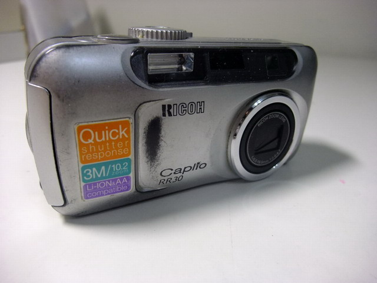
↑我人生中的第一台數位相機，RICHO RR30，300萬畫素，3倍光學變焦，有觀景窗，
最強的是電池續航力超久，1cm超強近拍。本站許多作品都是用它拍出來的。
自從它故障後，就成為貝貝玩具箱裡的玩具。今天，心血來潮，決定把它─拆了！
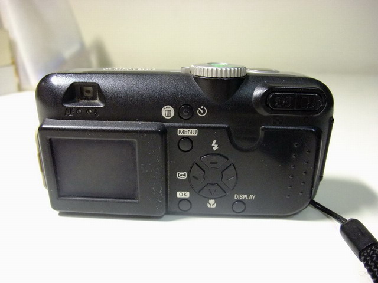
↑它的背面。
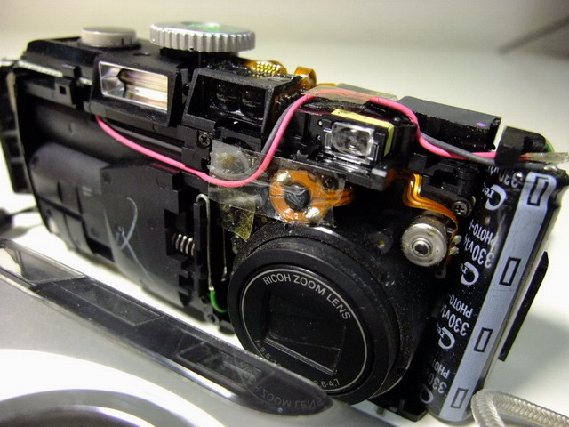
↑拆下外殼，正面看到電容。
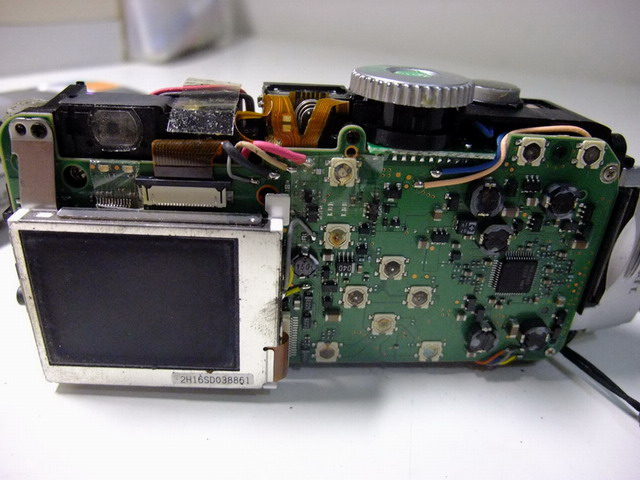
↑拆下外殼，背面看到電路板、液晶螢幕。
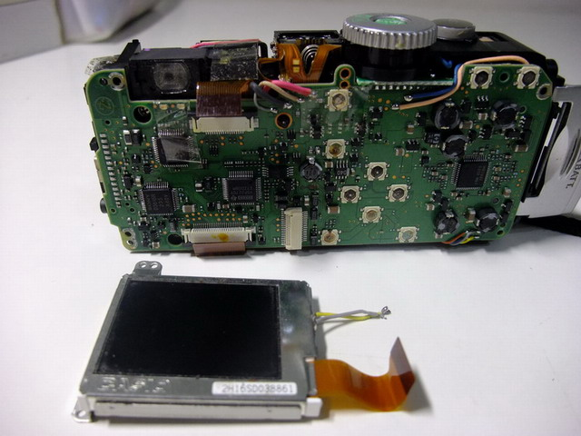
↑液晶螢幕與電路板分離。
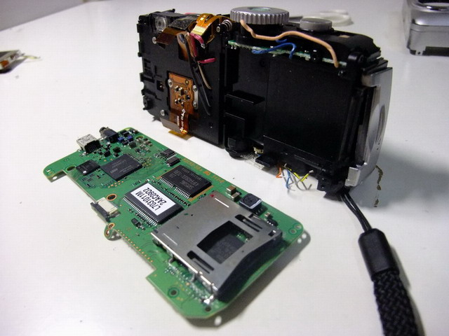
↑電路板與機體分離，看見裡面的SD(記憶卡)讀卡槽。
========== 以下是快門、開關、操作旋鈕與閃光燈模組 ==========

↑快門、開關、操作旋鈕與閃光燈模組。
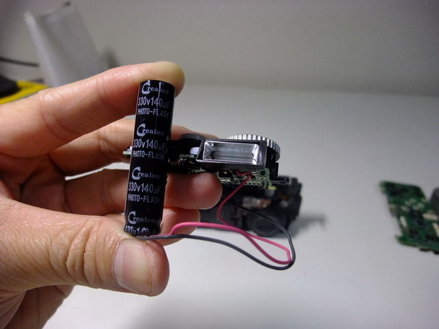
↑連接閃光燈的電容，330V，140*10-6F，還寫 Photo-Flash 專用。

↑操作旋鈕，觀察一下，電路板是如何偵測旋鈕的位置呢？
========== 以下是像機最重要的成像與拍攝模組 ==========
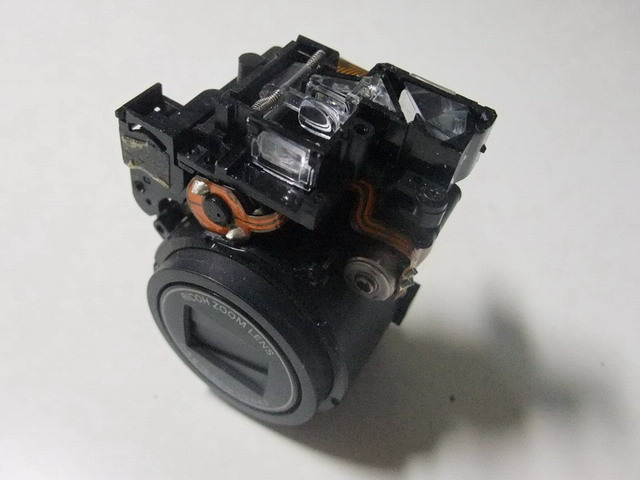
↑整個成像與拍攝模組與機身分離。
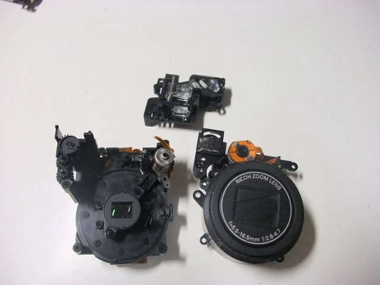
↑可再細分成三個小模組：(上)觀景窗模組，(右)鏡頭模組，(左)CCD模組。
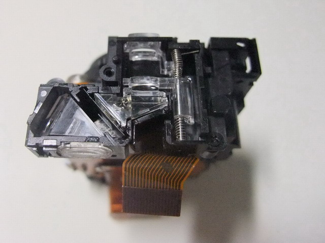
↑俯視觀景窗成像模組，一堆壓克力透鏡。
↑相機光學變焦時，觀景窗也要跟著變焦。
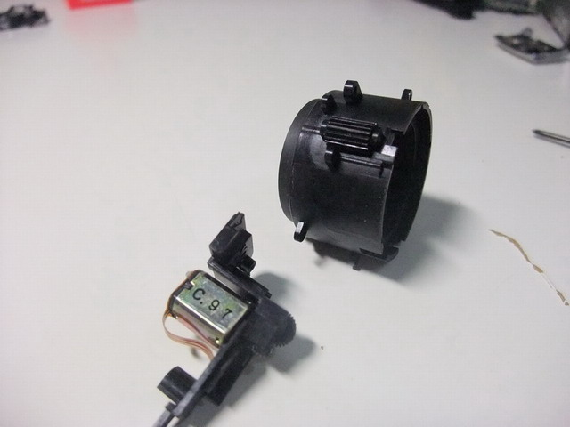
↑鏡頭模組中，鏡頭與驅動馬達分離。
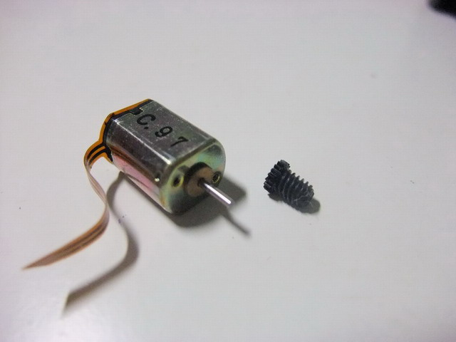
↑鏡頭模組驅動馬達特寫。
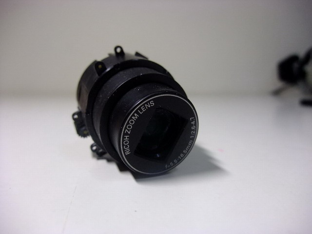
↑鏡頭伸長時的英姿。

↑鏡頭背面發現三個小東西：(左)電子訊號線，(上、下)線圈，可控制光圈與快門。
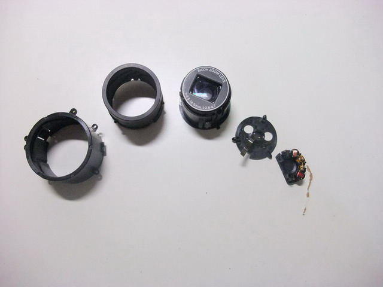
↑鏡頭再拆開，由大到小拍張合照。

↑剛剛在鏡頭背面發現的：電子訊號線，控制光圈與快門的線圈。

↑光圈和快門可以玩喔。
↑光圈和快門可以玩喔，玩給你看。
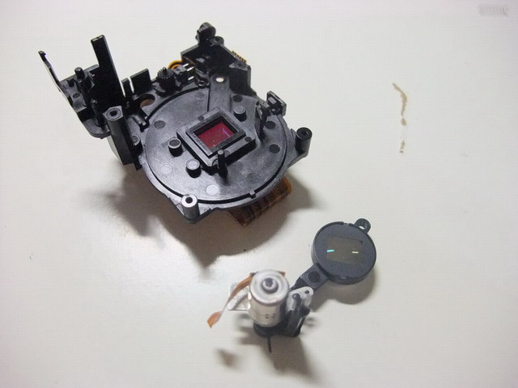
↑終於輪到CCD模組了，先把對焦用的透鏡與馬達拆下(右下)。
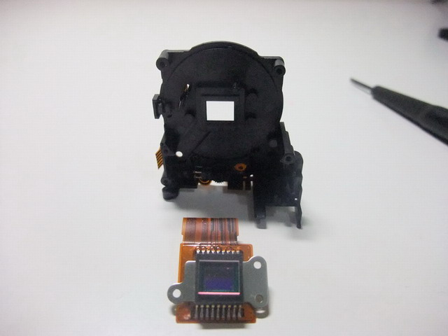
↑再讓CCD與機身分離。
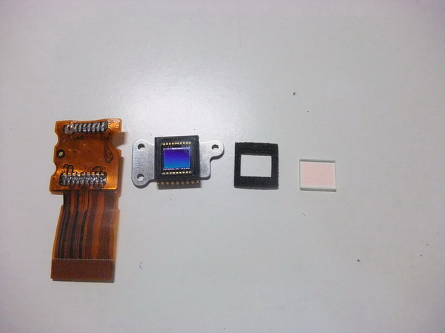
↑拆解CCD。
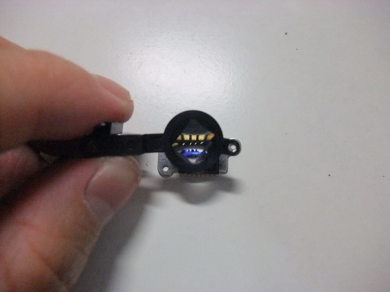
↑用鏡頭的透鏡放大CCD的焊接點，哇！超精細的。
========== 以下是液晶螢幕模組 ==========
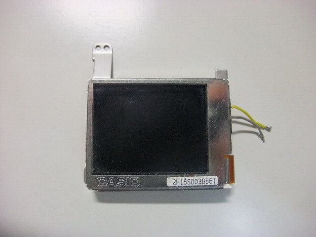
↑液晶螢幕模組，當然也要拆開來來看看囉。
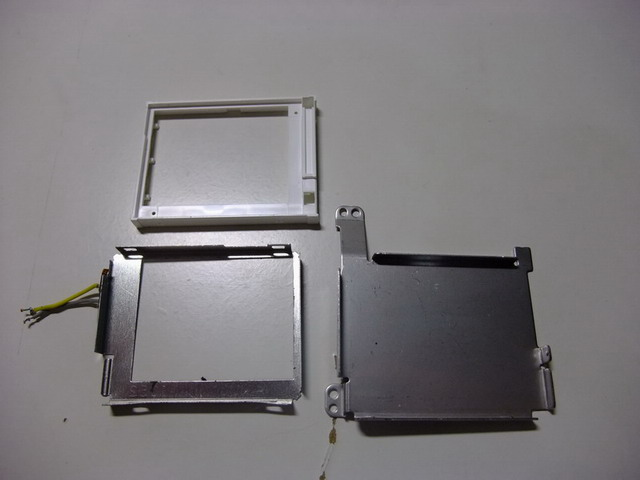
↑外殼。
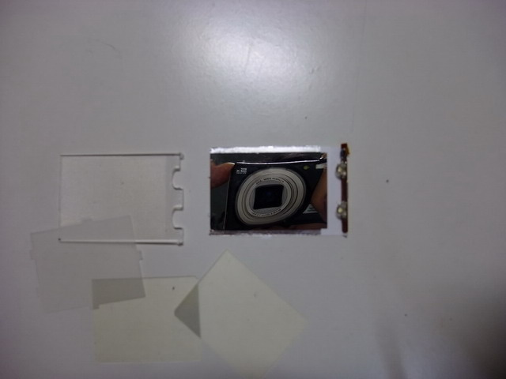
↑背光板，有光源、反光板、導光片等等光學元件。
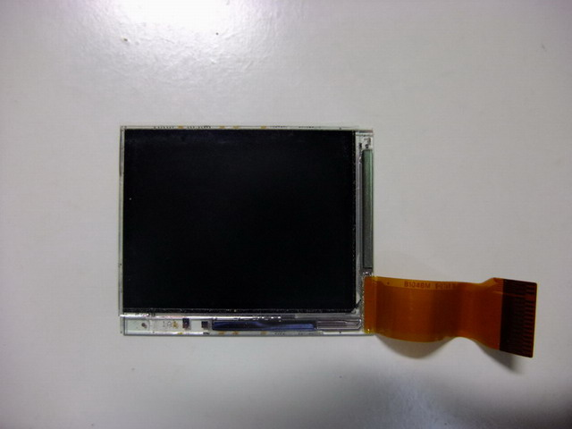
↑液晶螢幕的核心，液晶面板，全部黏在一片玻璃上，拆不開了。
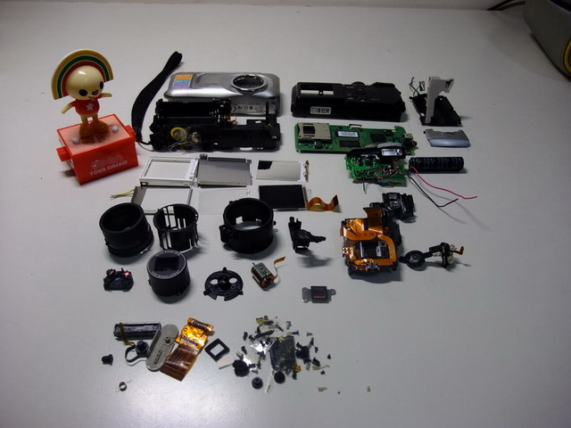
↑最後，所有演出的人員來個大合照吧！